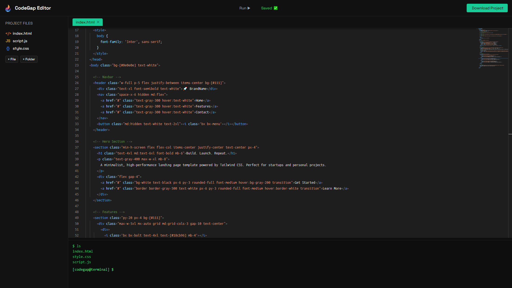

Scroll through detailed breakdowns of my best work
CodeGap Web IDE is a powerful, browser-based development environment designed to replicate the experience of Visual Studio Code right inside your web browser. Built using the Monaco Editor (the same editor that powers VS Code), it allows users to create, edit, and manage multiple files and folders with intuitive nesting support.
The editor includes a responsive sidebar file explorer, tab-based editing interface, and a fully integrated live preview that renders HTML output in real time — with proper CSS and JavaScript linkage support. Advanced features include Firestore syncing, keyboard shortcuts (like Ctrl+S), and full ZIP project export using JSZip. A dedicated 'Run' window simulates responsive testing for mobile and desktop views.

Click image to view fullscreen